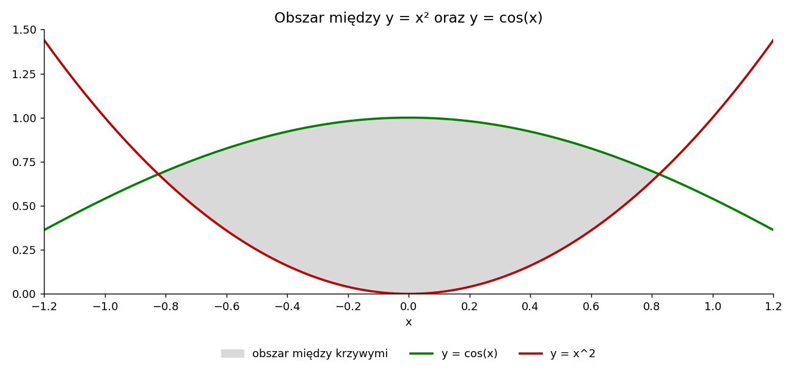

Arkusz kalkulacyjny
Plik Excela z tabelą iteracji bisekcji, tabelą całkowania numerycznego i wykresem analizowanego obszaru.
3.1Plik arkusza
Arkusz zawiera trzy zakładki: Bisekcja, Calkowanie i Wykres. Wszystkie wartości liczone są formułami, więc po zmianie dokładności \(\varepsilon\) w komórce L2 lub liczby podprzedziałów \(n\) w zakładce Calkowanie wyniki przeliczą się automatycznie.
3.2Tabela iteracji metody bisekcji
Funkcja \(f(x)=\cos x-x^2\), dokładność \(\varepsilon=0{,}000001\). Wykonano 19 iteracji; wiersz 20 z napisem „koniec” pokazuje przedział końcowy, w którym \((b-a)/2\lt \varepsilon\), a jego środek jest szukanym pierwiastkiem.
Pierwiastek dodatni, przedział [0; 1]
| Nr | a | b | c = (a+b)/2 | f(a) | f(b) | f(c) | (b-a)/2 | uwaga |
|---|---|---|---|---|---|---|---|---|
| 1 | 0,000000 | 1,000000 | 0,500000 | 1,000000 | -0,459698 | 0,627583 | 0,500000 | |
| 2 | 0,500000 | 1,000000 | 0,750000 | 0,627583 | -0,459698 | 0,169189 | 0,250000 | |
| 3 | 0,750000 | 1,000000 | 0,875000 | 0,169189 | -0,459698 | -0,124628 | 0,125000 | |
| 4 | 0,750000 | 0,875000 | 0,812500 | 0,169189 | -0,124628 | 0,027529 | 0,062500 | |
| 5 | 0,812500 | 0,875000 | 0,843750 | 0,027529 | -0,124628 | -0,047248 | 0,031250 | |
| 6 | 0,812500 | 0,843750 | 0,828125 | 0,027529 | -0,047248 | -0,009533 | 0,015625 | |
| 7 | 0,812500 | 0,828125 | 0,820312 | 0,027529 | -0,009533 | 0,009080 | 0,007812 | |
| 8 | 0,820312 | 0,828125 | 0,824219 | 0,009080 | -0,009533 | -0,000206 | 0,003906 | |
| 9 | 0,820312 | 0,824219 | 0,822266 | 0,009080 | -0,000206 | 0,004442 | 0,001953 | |
| 10 | 0,822266 | 0,824219 | 0,823242 | 0,004442 | -0,000206 | 0,002119 | 0,000977 | |
| 11 | 0,823242 | 0,824219 | 0,823730 | 0,002119 | -0,000206 | 0,000957 | 0,000488 | |
| 12 | 0,823730 | 0,824219 | 0,823975 | 0,000957 | -0,000206 | 0,000376 | 0,000244 | |
| 13 | 0,823975 | 0,824219 | 0,824097 | 0,000376 | -0,000206 | 0,000085 | 0,000122 | |
| 14 | 0,824097 | 0,824219 | 0,824158 | 0,000085 | -0,000206 | -0,000061 | 0,000061 | |
| 15 | 0,824097 | 0,824158 | 0,824127 | 0,000085 | -0,000061 | 0,000012 | 0,000031 | |
| 16 | 0,824127 | 0,824158 | 0,824142 | 0,000012 | -0,000061 | -0,000024 | 0,000015 | |
| 17 | 0,824127 | 0,824142 | 0,824135 | 0,000012 | -0,000024 | -0,000006 | 0,000008 | |
| 18 | 0,824127 | 0,824135 | 0,824131 | 0,000012 | -0,000006 | 0,000003 | 0,000004 | |
| 19 | 0,824131 | 0,824135 | 0,824133 | 0,000003 | -0,000006 | -0,000001 | 0,000002 | |
| 20 | 0,824131 | 0,824133 | 0,824132 | 0,000003 | -0,000001 | 0,000001 | 0,000001 | koniec |
Pokaż tabelę dla pierwiastka ujemnego, przedział [−1; 0]
| Nr | a | b | c = (a+b)/2 | f(a) | f(b) | f(c) | (b-a)/2 | uwaga |
|---|---|---|---|---|---|---|---|---|
| 1 | -1,000000 | 0,000000 | -0,500000 | -0,459698 | 1,000000 | 0,627583 | 0,500000 | |
| 2 | -1,000000 | -0,500000 | -0,750000 | -0,459698 | 0,627583 | 0,169189 | 0,250000 | |
| 3 | -1,000000 | -0,750000 | -0,875000 | -0,459698 | 0,169189 | -0,124628 | 0,125000 | |
| 4 | -0,875000 | -0,750000 | -0,812500 | -0,124628 | 0,169189 | 0,027529 | 0,062500 | |
| 5 | -0,875000 | -0,812500 | -0,843750 | -0,124628 | 0,027529 | -0,047248 | 0,031250 | |
| 6 | -0,843750 | -0,812500 | -0,828125 | -0,047248 | 0,027529 | -0,009533 | 0,015625 | |
| 7 | -0,828125 | -0,812500 | -0,820312 | -0,009533 | 0,027529 | 0,009080 | 0,007812 | |
| 8 | -0,828125 | -0,820312 | -0,824219 | -0,009533 | 0,009080 | -0,000206 | 0,003906 | |
| 9 | -0,824219 | -0,820312 | -0,822266 | -0,000206 | 0,009080 | 0,004442 | 0,001953 | |
| 10 | -0,824219 | -0,822266 | -0,823242 | -0,000206 | 0,004442 | 0,002119 | 0,000977 | |
| 11 | -0,824219 | -0,823242 | -0,823730 | -0,000206 | 0,002119 | 0,000957 | 0,000488 | |
| 12 | -0,824219 | -0,823730 | -0,823975 | -0,000206 | 0,000957 | 0,000376 | 0,000244 | |
| 13 | -0,824219 | -0,823975 | -0,824097 | -0,000206 | 0,000376 | 0,000085 | 0,000122 | |
| 14 | -0,824219 | -0,824097 | -0,824158 | -0,000206 | 0,000085 | -0,000061 | 0,000061 | |
| 15 | -0,824158 | -0,824097 | -0,824127 | -0,000061 | 0,000085 | 0,000012 | 0,000031 | |
| 16 | -0,824158 | -0,824127 | -0,824142 | -0,000061 | 0,000012 | -0,000024 | 0,000015 | |
| 17 | -0,824142 | -0,824127 | -0,824135 | -0,000024 | 0,000012 | -0,000006 | 0,000008 | |
| 18 | -0,824135 | -0,824127 | -0,824131 | -0,000006 | 0,000012 | 0,000003 | 0,000004 | |
| 19 | -0,824135 | -0,824131 | -0,824133 | -0,000006 | 0,000003 | -0,000001 | 0,000002 | |
| 20 | -0,824133 | -0,824131 | -0,824132 | -0,000001 | 0,000003 | 0,000001 | 0,000001 | koniec |
3.3Tabela całkowania numerycznego
Tabela jest zrobiona dla \(n=20\) (21 wierszy: \(i=0,1,\dots,20\)).
| i | x_i | cos(x_i) | x_i^2 | f(x_i) | waga Simpsona |
|---|---|---|---|---|---|
| 0 | -0,824132 | 0,679194 | 0,679193 | 0,000001 | 1 |
| 1 | -0,741719 | 0,737309 | 0,550147 | 0,187162 | 4 |
| 2 | -0,659306 | 0,790418 | 0,434684 | 0,355734 | 2 |
| 3 | -0,576892 | 0,838162 | 0,332805 | 0,505357 | 4 |
| 4 | -0,494479 | 0,880216 | 0,244510 | 0,635706 | 2 |
| 5 | -0,412066 | 0,916295 | 0,169798 | 0,746497 | 4 |
| 6 | -0,329653 | 0,946155 | 0,108671 | 0,837484 | 2 |
| 7 | -0,247240 | 0,969592 | 0,061127 | 0,908464 | 4 |
| 8 | -0,164826 | 0,986447 | 0,027168 | 0,959279 | 2 |
| 9 | -0,082413 | 0,996606 | 0,006792 | 0,989814 | 4 |
| 10 | 0,000000 | 1,000000 | 0,000000 | 1,000000 | 2 |
| 11 | 0,082413 | 0,996606 | 0,006792 | 0,989814 | 4 |
| 12 | 0,164826 | 0,986447 | 0,027168 | 0,959279 | 2 |
| 13 | 0,247240 | 0,969592 | 0,061127 | 0,908464 | 4 |
| 14 | 0,329653 | 0,946155 | 0,108671 | 0,837484 | 2 |
| 15 | 0,412066 | 0,916295 | 0,169798 | 0,746497 | 4 |
| 16 | 0,494479 | 0,880216 | 0,244510 | 0,635706 | 2 |
| 17 | 0,576892 | 0,838162 | 0,332805 | 0,505357 | 4 |
| 18 | 0,659306 | 0,790418 | 0,434684 | 0,355734 | 2 |
| 19 | 0,741719 | 0,737309 | 0,550147 | 0,187162 | 4 |
| 20 | 0,824132 | 0,679194 | 0,679193 | 0,000001 | 1 |
| wielkość | wartość |
|---|---|
| a | -0,824132 |
| b | 0,824132 |
| n (parzyste) | 20 |
| h = (b-a)/n | 0,082413 |
| pole – metoda trapezów | 1,092057 |
| pole – metoda Simpsona | 1,094754 |
| wartość odniesienia | 1,094754 |
| błąd trapezów | 2,70·10⁻³ |
| błąd Simpsona | 3,77·10⁻⁷ |
3.4Wykres obszaru
Wykres z arkusza: zielona krzywa to \(y=\cos x\), czerwona \(y=x^2\), a szary obszar leży między nimi.
